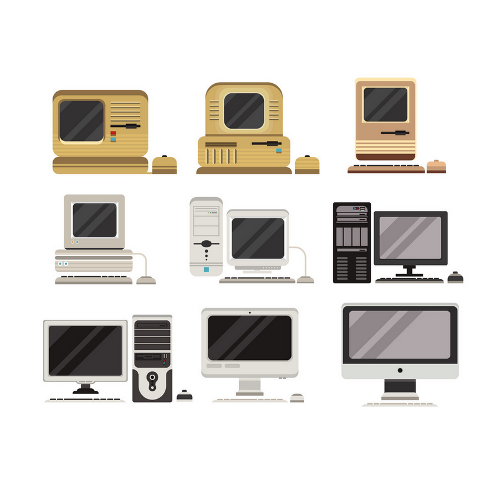

Go back

-
Object Database Number: 4
-
What is it: The Personal Computer
-
When was it made: 1980's (Still being updated)
-
By who: Various
-
For who: Everyone
-
Where is it experienced: In the home and workplace of most people
-
Description: Before the “home computer” or “desktop pc” most work computers required some knowledge of how to handle the text-based terminals that was common use back then. The modern desktop pc introduced a new more user-friendly approach to the computer, by using the metaphor of “the desktop”. This was meant as both the metaphorical nature of the graphical user interface (GUI) that represented a desktop (the main interface) as well as items associated with a desktop’s workspace (folders, files etc.). Furthermore, the name “desktop pc” was also a description of the “home pc” as something that is standing on, and thus being an extension of the real life desktop. This kind of metaphor for the classical workspace that has been the main seat of researchers, artists, writers and thinkers for millenia, is today the most prevalent form of vizualising and making understandable, the inner workings and systems of software.
-
Week/theme: Week 37 - Digital & Design / Zine
-
Identity: Personal
-
Materiality: Physical